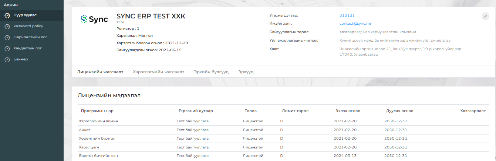

Хэрэглэгчийн админ модулиар дараах үйдлүүдийг хийх боломжтой.
Үүнд:
1. Байгууллагын ерөнхий мэдээлэл харах засварлах
2. Хэрэглэгчийн удирдлагыг хийх
3. Эрхийн бүлгийн удирдлага
4. Нууц үгийн бодлого тохируулах
5. Өөрчлөлтийн лог харах
6. Хандалтын лог харах
7. Баннер удирдах
